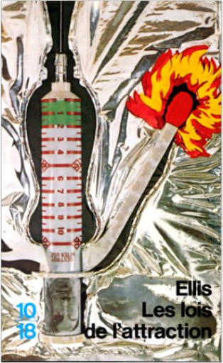

les aventures de blake et mortimer, tome 27 : le cri du molochjean dufaux, christian cailleaux, étienne schréder les aventures de blake et mortimer, tome 27 : le cri du molochjean dufaux, christian cailleaux, étienne schréder  glamoramabret easton ellis L'ennemi numéro un des partisans du "politiquement correct" a encore frappé. Après avoir révélé, dans American Psycho la face obscure des yuppies, Bret Easton Ellis noue ensemble la dictature de l'apparence et la brutalité aveugle du terrorisme dans Glamorama. les lois de l'attractionbret easton ellis Le roman le moins connu de Bret Easton Ellis est peut-être le meilleur, sinon le plus hypnotique. La précision stylistique plus aboutie que dans Moins que zéro se love dans une méthode narrative mûrie : faire se fondre les personnages dans la chimère de ce qu'ils voudraient être. Croisant les existences fantomatiques d'étudiants pendant l'année universitaire 1985-86, Ellis en étale cliniquement les aventures, frustrations et errances, les peignant en poissons avariés s'incrustant dans du papier journal, un journal intime collectif schizoïde et momifié. Il n'est que drague morne, drogue triste et sexe froid parsemant l'évolution de ces pantins (parfois rencontrés dans Moins que zéro) dans le néant dévorant de leur vie. 340 pages de :Sean - Vais dans la chambre de Denton. Nous descendons quelques bières, on fume de l'herbe, on discute, mais je ne saque pas l'histoire de la mort de son copain, pas davantage la musique de Duran Duran ni ses regards torves, si bien que nous continuer de parler et que je me sens de plus en plus raide. Chronique hébétée sous forme de succession de monologues intérieurs et démonstration d'écriture, Les Lois de l'attraction captive, amuse et terrifie. Parfait vaccin contre toute nostalgie pour les années quatre-vingt, c'est le pendant partouze-valium de l'autre grand roman d'Ellis, American Psycho, centré lui sur un seul personnage pour mieux en sonder les abysses. —Florian Pittion |


 Made with Delicious Library
Made with Delicious LibraryNancy, State zipflap congrotus delicious library Thomas, Julien